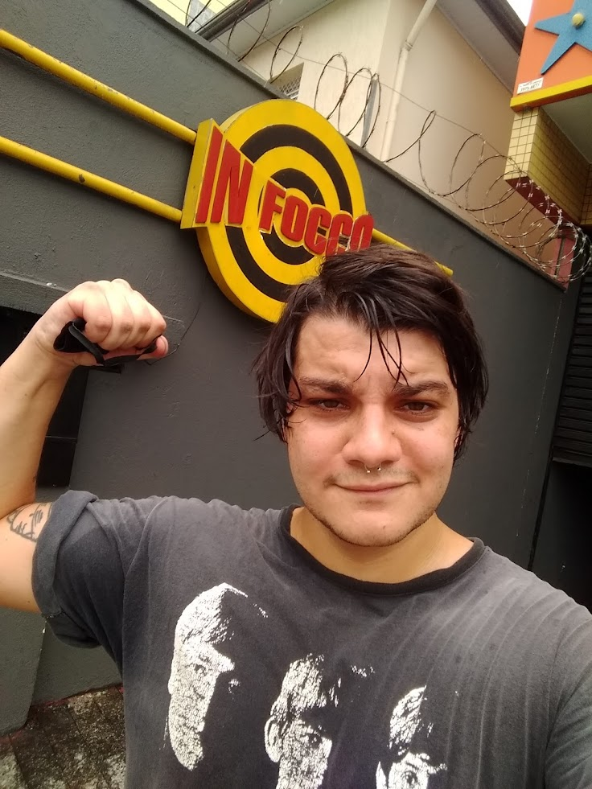

Meu portifólio
Bruno Marques

Olá, meu nome é Bruno Marques, tenho 28 anos e moro em São Paulo Capital, estou começando minha carreira de desenvolvimento web.
Minha fotinha
Habilidades e curiosidades
Site favorito
Habilidades e curiosidades
Aparentemente HTML nesse momento
Fritar ovo
Tocar guitarra
?????
Ter forças para ir na academia
Cuidar de plantas
Link interessante
Meu site favorito